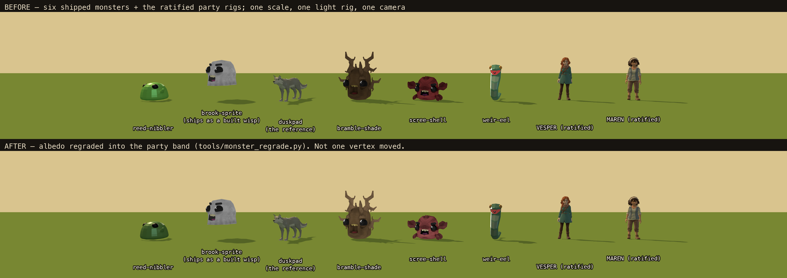
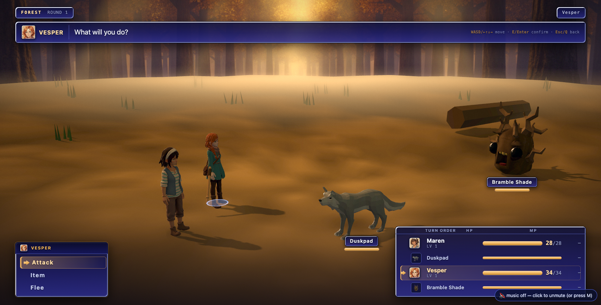
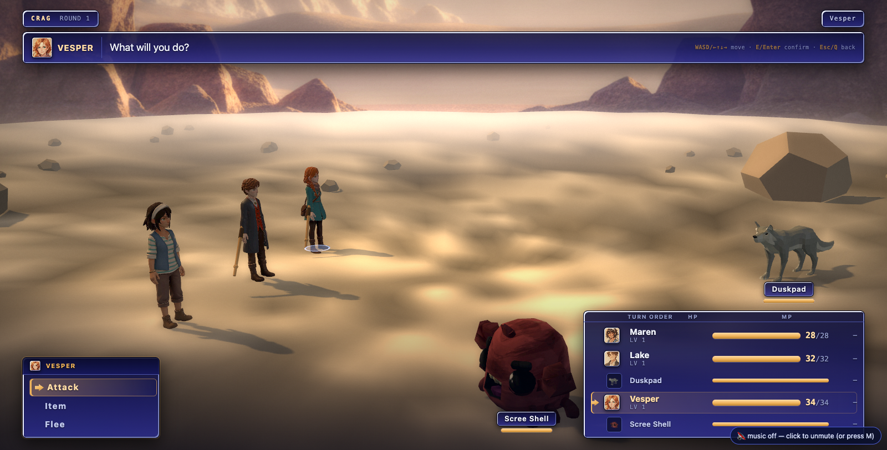
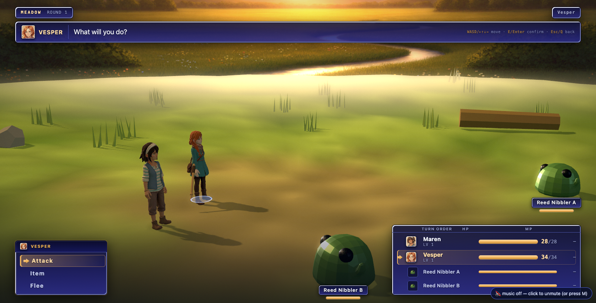
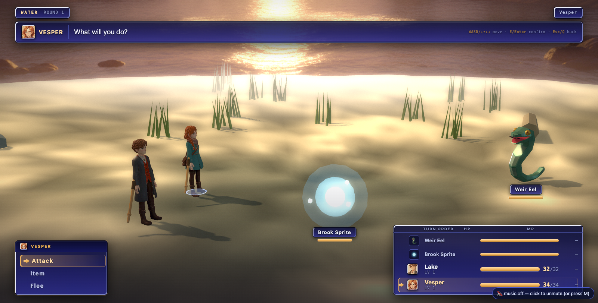
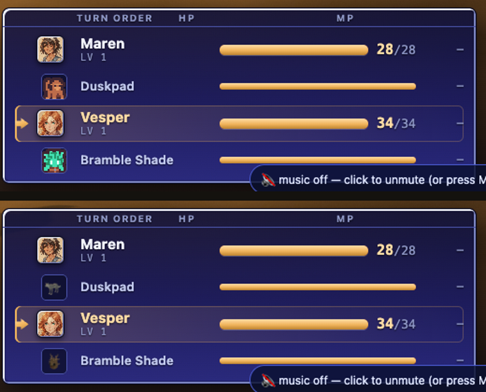

Monsters that look like one game
2026-08-08, battle wave-2 lane B · BET H of
docs/plans/battle-presentation-inventory.md (§8 and §7.3)
Instruments: tools/monster_lineup.mjs (the comparison frame),
tools/monster_regrade.py (the census, the band, the grade, the icon-agreement
measure), tools/monster_icons.mjs (the icons),
tools/monster_board.py (this page's headline picture),
tools/battle_shots.mjs (the shipping frames).
1. The picture the claim never had
The game never shows more than three monsters at once, never at the same distance, and never under the same plate — so "they do not match" was an assertion nobody could check. This is all six at one scale, under the arena's own five-light rig, from one camera, with Vesper and Maren standing in the same row. The party rigs are ratified, shipped art; they are the only reference that can settle a style question without asking anybody's taste.

node tools/monster_lineup.mjs --chars vesper,maren
--w 2100 --h 500 --dist 14.0 --span 2.75, then python3 tools/monster_board.py.
Heights come from BattleStage3D.MON, the rig from BattleStage3D.CFG, the
party from BattleStage3D.art.models — the page reads the shipping module, it does not
keep a second copy of its numbers. Every body is posed at t = 0 of its own Idle clip, so this
frame is reproducible.2. The census — every monster asset the game actually ships
Parsed straight out of the GLBs (glTF JSON chunk + accessor walk). Palette figures are
area-weighted: each triangle's albedo — sampled from the baseColor texture at its UV
centroid, or from its flat baseColorFactor — weighted by its world-space area, so a
four-pixel eye is not half a monster and a textured model and a flat one are measured by one rule.
| slot | concept | tris | prims | albedo | distinct colours | S | V50 | V95 | pack (all CC0, Quaternius) |
|---|---|---|---|---|---|---|---|---|---|
| reed-nibbler | green slime blob | 1440 | 2 | flat, 2 materials | 2 | 0.490 | 0.821 | 0.821 | Animated Monster Pack |
| brook-sprite | white round ghost | 1000 | 1 | 512² painted | 79 | 0.033 | 0.494 | 0.553 | Cute Animated Monsters |
| duskpad | four-legged grey wolf | 1962 | 4 | flat, 4 materials | 4 | 0.055 | 0.473 | 0.647 | Ultimate Animated Animal |
| bramble-shade | bark creature, branch antlers | 1368 | 1 | 512² painted | 317 | 0.499 | 0.227 | 0.290 | Cute Animated Monsters |
| scree-shell | red armoured crab | 1820 | 1 | 512² painted | 393 | 0.533 | 0.255 | 0.435 | Cute Animated Monsters |
| weir-eel | coiled teal serpent | 1618 | 7 | flat, 7 materials | 7 | 0.378 | 0.657 | 0.906 | Easy Enemy Pack |
Provenance is fully receipted in public/assets/monsters/3d/MANIFEST.md: every file is
Quaternius, CC0 1.0, downloaded 2026-07-30, licence text quoted verbatim. Nothing here is Tripo and
nothing is procedural — the one built body is the brook sprite's, which is code
(MON['brook-sprite'].build = 'wisp') and whose GLB is only its documented fallback.
3. The axes, with numbers — and the two that turned out not to matter
| candidate axis | measured spread | verdict |
|---|---|---|
| poly density | 1000 – 1962 tris (1.96×); every model 1–7 primitives, one skin, one skeleton depth class | NOT the problem. All six are the same low-poly budget from the same author. Nothing to normalise. |
| texture vs flat vertex colour | 3 painted 512², 3 flat baseColorFactor; distinct albedo colours 2 – 393 (196×) | REAL but not what the frame shows. At battle scale (a foe is ~18 % of frame height) a 512² map carrying baked form-shading and a four-colour flat model read as the same kind of object. Recorded, not acted on. |
| albedo VALUE | V50 0.227 – 0.821 (3.6×, 1.85 stops); V95 up to 0.906 | REAL and fixed. reed-nibbler's body sat above the party's brightest paint (0.784) — a neon jelly beside two muted people. |
| albedo SATURATION | S 0.055 – 0.533 (9.4×) | REAL and fixed. Three creatures were more saturated overall than a person is at her median. |
| proportion / stylisation | 4 of 6 are chibi ball-bodies with painted cartoon eyes + grin; 1 naturalistic quadruped; 1 stylised serpent | THE LOUDEST AXIS, and the one this lane refused. It is mesh + repaint, not material. See §6. |
4. The target style, stated so a future asset can be judged
Measured off the shipping party rigs' baseColor maps (vesper-v2,
maren-v1, lake-v1 — the same files play3d.html's
MODELS registry hands the overworld): S50 0.333–0.452, V05 0.192–0.216,
V50 0.306–0.443, V95 0.718–0.784.
So, in tools/monster_regrade.py:
V50 ∈ [0.192, 0.784]— no creature darker than her darkest paint, none brighter than her brightest;V95 ≤ 0.784— no highlight out-glows the cast;S ≤ 0.452— a ceiling, never a floor: a grey wolf and a pale wisp must not be failed for being grey.
Measured against it, duskpad and brook-sprite pass untouched and the other four fail — which is exactly what the lineup frame shows by eye. That agreement is the reason to trust the gate.
5. What changed: the regrade
source rev 633b51fb band: V50 in (0.192, 0.784) V95<=0.784 S<=0.452
monster H S V05 V50 V95 cols band
bramble-shade src 29.6 0.499 0.055 0.227 0.29 317 out: S
-> 29.7 0.438 0.082 0.341 0.435 317 in band
brook-sprite src 358.9 0.033 0.078 0.494 0.553 79 in band
keep (no recipe: held as reference art)
duskpad src 75.6 0.055 0.473 0.473 0.647 4 in band
keep (no recipe: held as reference art)
reed-nibbler src 96.0 0.490 0.117 0.821 0.821 2 out: S,V50,V95
-> 96.0 0.402 0.082 0.580 0.580 2 in band
scree-shell src 1.5 0.533 0.016 0.255 0.435 393 out: S
-> 1.5 0.427 0.020 0.341 0.58 393 in band
weir-eel src 145.4 0.378 0.657 0.657 0.906 7 out: V95
-> 145.4 0.348 0.440 0.520 0.717 7 in bandThree properties of the tool that matter more than the numbers:
- It never reads the file it is about to write. Source bytes come from
git show 633b51fb:<path>, so running it twice is the same as running it once and the recipe stays the whole description of the difference between the pristine download and what ships. - Value moves by a GAIN, not a gamma. A gamma solved on the median is fine for a 300-colour painted map and catastrophic for a two-colour flat one — it wanted γ 4.17 for reed-nibbler and drove its black eyes to 0.000 in the same stroke. A gain is a ratio, so the darks stay in proportion and the paint's own form-shading survives.
- Geometry, skins, UVs and animations are copied verbatim, accessor by accessor. The tool cannot move a vertex. Re-censused after the write: tris, prims, node counts and clip lists are identical to the source rev.
In the shipping frame




6. What changed: the foe icons, which were lying
Audit §7.3: foeIcon: (mid) => monsterUrl(mid) resolved to a 16 px
hand-drawn sprite from an unrelated pixel pack. The panel that exists so the player can plan was
showing creatures in colours they do not have. The icons are now rendered from the same GLBs the
arena stages, under the arena's rig, framed by projecting each body's bounding box —
agreement is now structural, not remembered.

| monster | model H | old icon H | new icon H | error before | error after |
|---|---|---|---|---|---|
| reed-nibbler | 96.0 | 0.2 | 91.6 | 95.8° | 4.4° |
| scree-shell | 1.5 | 256.3 | 360.0 | 105.2° | 1.5° |
| weir-eel | 145.4 | 309.4 | 120.9 | 164.0° | 24.5° |
| bramble-shade | 29.7 | 338.1 | 29.8 | 51.6° | 0.1° |
| duskpad (grey model — chroma error) | S 0.055 | S 0.488 | S 0.089 | S +0.43 | S +0.03 |
| brook-sprite (see note) | S 0.033 | S 0.523 | S 0.446 | S +0.49 | S +0.41 |
BattleStage3D.PROXY.sprite, the module's own palette for that family, so it matches
what the player sees. Scoring it against the unused mesh is what would put the lie back.python3 tools/monster_regrade.py --icons re-runs the whole table.7. What was refused, and what it would cost
- Repaint the three atlases (keep the meshes, redraw eyes/mouth toward the party's register): cheapest real fix. ~3 texture repaints, no rig work, no intake gate, no retarget. But it is generative-art iteration on 512² maps whose UV islands are unlabelled, and a bad repaint is immediately visible where a bad grade is not.
- Regenerate the meshes through the character factory (gen-turnaround → Tripo → intake
joint×IBM≈I probe → retarget →
vesper_verify): the full pipeline, four times, plus re-solvingMONheights, yaw and bob, plus re-shooting every board that photographs them. That is a lane of its own, not a tail-end of a palette pass.
8. Residuals
- weir-eel's icon still carries 24.5° of hue error — its icon frames the head, and the head is where the (now muted) red mouth is. Real, small, and arguably correct: that is what the creature looks like from the front.
- The chibi faces remain (§7). This is the honest state of BET H: the palette half is done and measurable, the silhouette half is named and costed.
- The three painted atlases still carry baked form-shading, which fights the arena's own key light. Not visible at battle scale; would matter under BET B's camera moves.
- The regrade is destructive-in-place and idempotent by reading git. If the source rev is
ever rewritten,
SOURCE_REVin the tool must move with it.
9. Gates
battle_sim— ALL ENVELOPES GREEN + 6 engine property tests. The kernel was read and never written;monsters.jsonwas not edited at all, so no balance number moved.encounter_sim— GREEN.arena_playtest --port=3000— nogl PASS · serial PASS; organic FAIL "no hostile zone reachable", which is pre-existing and already receipted by another lane tonight against a pristine HEAD copy served from a scratch tree (docs/qa/DAYLOG.md, BET I gates). Nothing this lane changed can reachSIM.zone/walkFloors.transition_test --port=3000— see the DAYLOG entry for this lane's run and its A/B.dialogue_test— not run: no portrait, bust, cut-in or thumbnail path was touched. The foe icon isfoeIcon, which that gate does not cover (it gates speakers and party faces).